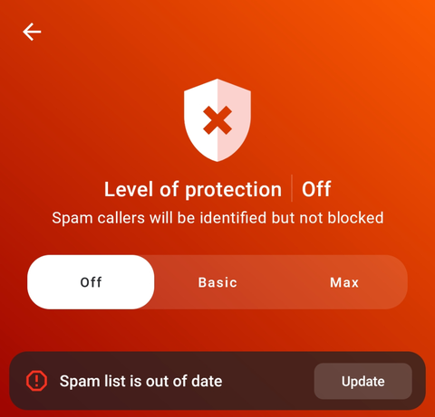
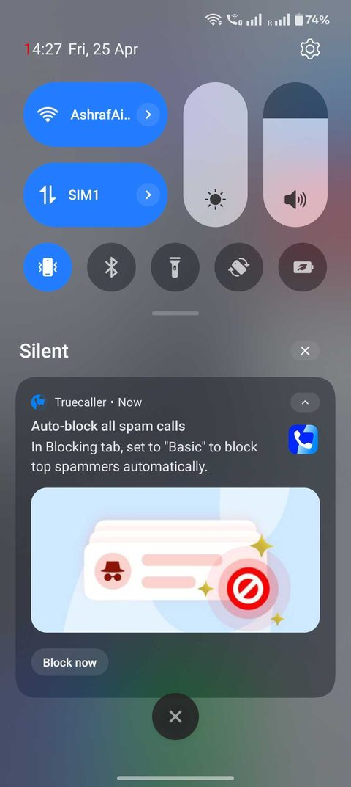
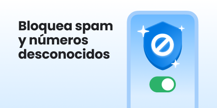
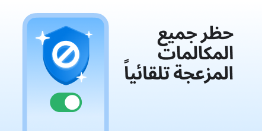
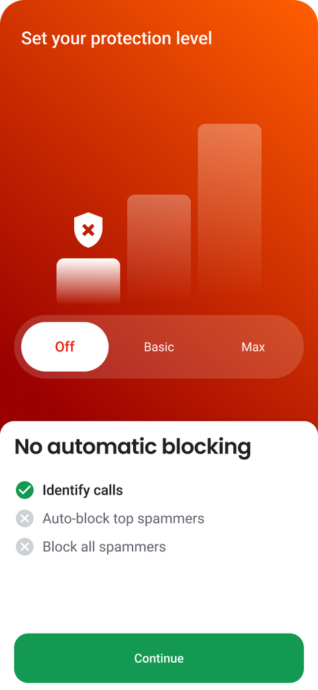
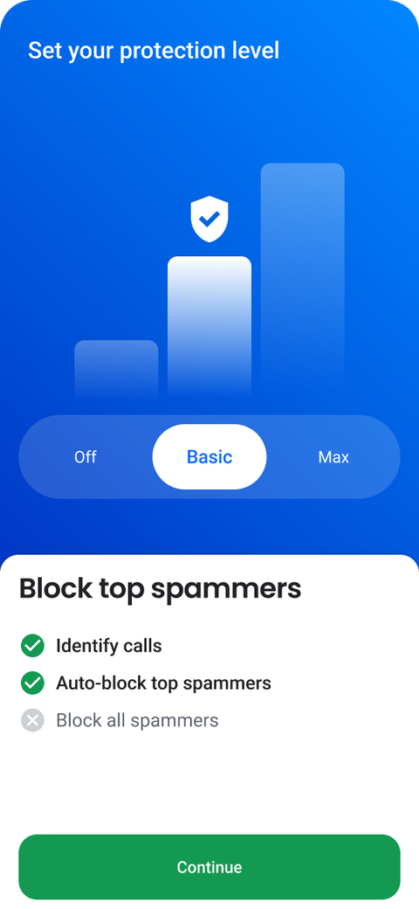
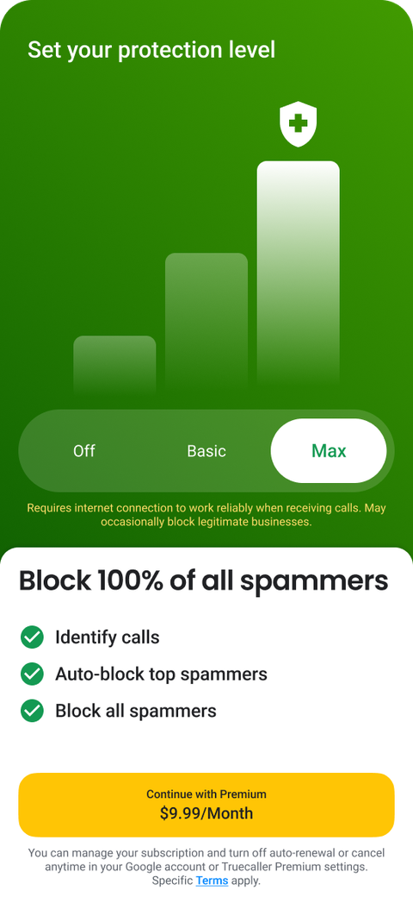
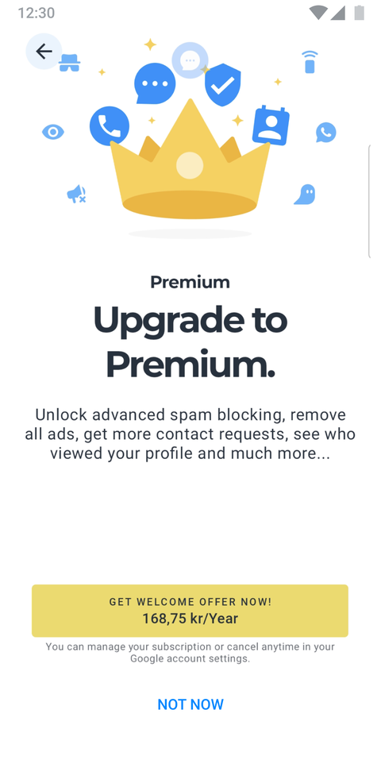

Putting spam-protection choice into onboarding
The setting users skipped, turned into an activation and premium step.
Role: Product Manager, onboarding · Platform: Android & iOS · Partners: Premium, Design, CRM, Data
The problem
Users said Truecaller wasn't blocking spam
Blocking spam is Truecaller's whole promise. But our reviews and support tickets kept saying the opposite. Reading through the feedback, the complaints were consistent and specific: people felt the app simply wasn't doing the one thing they installed it for.
"Truecaller doesn't block spam calls at all, I still get them every day."
Representative review, growth market"Installed it to stop spam but nothing gets blocked. What's the point?"
Representative support ticketThe diagnosis
The blocking was off by default, users might not know
Working through the data with the cross-functional teams, I confirmed the root cause: automatic blocking was off by default. Users already had the feature. They just never turned it on, and most had no idea it existed. The capability was there. The awareness wasn't.

The validation
A test push proved awareness was the gap
Before building anything, I tested the hypothesis the cheap way: if users just don't know the setting exists, then telling them should move behavior. I sent a test push notification pointing new users straight to the blocking setting, localized per market.

Localized creative variants tested across markets:


The solution
Bring the choice into onboarding, and lead with value
If awareness was the problem, the fix was to make the choice unmissable. I built a dedicated onboarding step where every new user sets their protection level: from Off, to Basic (auto-block top spammers), to Max, our paid tier that blocks 100% of spammers. It replaced the old generic "Upgrade to Premium" screen with something that leads with what the user actually wants: protection.



Before

After
- A/B tested variants across South Africa, India, Egypt, Malaysia, Nigeria, the EU, and LATAM before each rollout step.
- Made it a premium surface with the Premium team: monthly and yearly pricing tests inside onboarding, deeplinks so a day-1 push brings users back to the setting, and upgrade entry points from the call screen.
The result
A skipped screen became a growth and revenue engine
- +16-72% uplift in total premium conversion, depending on the market.
- 4x more premium conversions at the onboarding trigger point than other surfaces.
- Rolled out worldwide, from a single-market test to the global default.
- A screen users used to skip became both an activation step and a premium entry point, with a push-notification loop that brings users back to it.